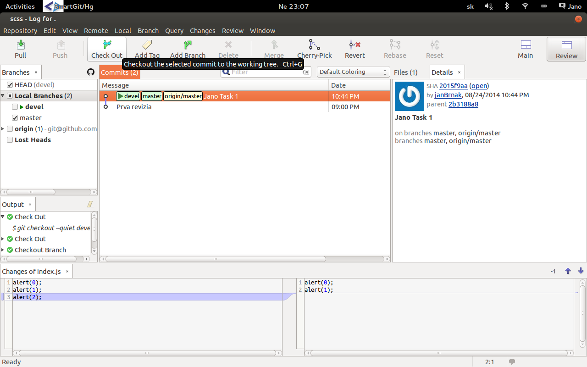

GIT
1. Práca so systémom
2. Vetvenie
3. Best practice
4. Inštalácia programov
5. Zdroje
1. Práca so systémom
- 1.1 Získanie repozitaru (init, clone)
- 1.2 Stavy v ktorých sa môže súbor nachádzať
- 1.3 Nahrávanie zmien a história (status, add, commit, log)
- 1.4 Rušenie zmien (checkout, revert, reset)
- 1.5 Práca so vzdialeným repozitárom (fetch, push)
1.1 Získanie repozitaru (git init)

1.1 Získanie repozitaru (git clone <url> <dir>)
1.2 Stavy v ktorých sa môže súbor nachádzať

1.3 Nahrávanie zmien a história (git status)
1.3 Nahrávanie zmien a história (git add)

1.3 Nahrávanie zmien a história (git commit -m "message")
1.3 Nahrávanie zmien a história (git log)
1.4 Rušenie zmien (git checkout <commit id>)
1.4 Rušenie zmien (git checkout <commit id>)
1.4 Rušenie zmien (git reset --hard <commit id>)
1.4 Rušenie zmien (git reset --hard <commit id>)
1.5 Práca so vzdialeným repozitárom (git fetch)
1.5 Práca so vzdialeným repozitárom (git fetch)

1.5 Práca so vzdialeným repozitárom (git push origin master)
2. Vetvenie
- 2.1 Čo je to vetva
- 2.2 Vytvorenie vetvy (git branch devel)
- 2.3 Prepínanie medzi vetvami (git checkout devel)
- 2.4 Spájanie (merge, rebase, cherry-pick)
- 2.5 Zmazanie (git branch -d <branch name>)
2.1 Čo je to vetva
2.2 Vytvorenie novej vetvy (git branch devel)
2.3 Prepínanie medzi vetvami (git checkout devel)
2.4 Spájanie (git cherry-pick <commit-id>)
2.4 Spájanie (git rebase devel)
2.4 Spájanie (git merge devel)
2.4 Spájanie (git merge devel) 2
2.4 Zmazanie (git branch -d <branch name>)
3. Best practice
- 3.1 Štruktúra správy v revíziach
- 3.2 Práca s projektom
- 3.3 Odosielanie zmien na server a riešenie konfliktov
3.1 Štruktúra správy v revíziach (git commit -m "sprava")
HOTFIX/TASK/DEVEL/...: Strucny popis Podrobnejsi popis
3.2 Práca s repozitárom
- pri práci nepoužívať vetvu master, vytvoriť si vždy inú napriklad devel alebo názov tasku, ktorý som dostal
- vetva master slúži na zlučovanie a nahrávanie zmien na server
- pravidelne ukladať revízie (git add, git commit -m "message")
- snažiť sa rozdelovať revízie do logických celkov (napríklad, ak vykonám nejaky task alebo opravým bug)
- na sťazhovanie zmien so servera nepoužívať pull, ale fetch
- keď sa chcem prepnúť medzi vetvami, spájať vetvi alebo sťahovať vytvorené zmeny so servera vždy je potrebné mať uložené všetký zmeny u seba v lokalnom repozitary a v aktualnej vetve
- aspoň dva krát denne skontrolovať, či nie su nové revízie(commit) nahraté na servery, ak ano spojiť(merge) ich so svojou master vetvou(git fetch, git merge origin/master)
3.3 Pridávanie zmien do master repozitára
- Skontrolovať, či mám v aktulnej vetve uložené zmeny (git status), ak nie uložiť (git commit)
3.3.1 Dokončenie práce na vetve hotfix
3.3.2 Stiahnutie zmien zo servera (git fetch)

3.3.3 Prepnutie na vetvu master (git checkout master)
3.3.4 Zlučenie vetvy master a hotfix (git merge hotfix)
3.3.5 Konflikt pri zlúčeni vetvy master s vetvou origin/master (git merge origin/master)
3.3.6 Riešenie konfliktu
3.3.7 Vyriešenie konfliktu
3.3.8 Stav po vyriešení konfliktu
3.3.9 Nahranie zmien na server (git push origin master)
3.3.10 Zmazanie vetvy hotfix (git branch -d hofix)
4. Inštalácia programov
1. Git http://git-scm.com/downloads
2. Git GUI https://code.google.com/p/gitextensions/
3. Git Merge Tool http://kdiff3.sourceforge.net/
5. Zdroje
1. Git dokumentacia http://git-scm.com/book/cs
2. Git tutorial https://www.atlassian.com/git/tutorial/git-basics